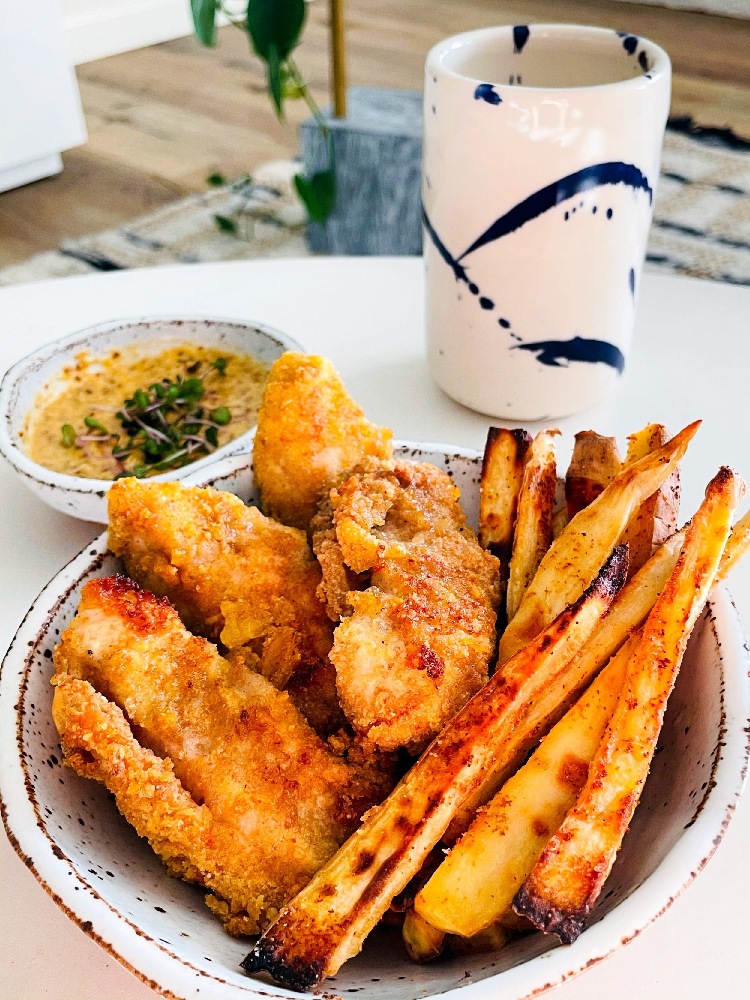

To make these crispy chicken strips, Paola Velez first dredges the strips in a flour mixture, then dips them in a buttermilk brine — the same brine used to initially brine the chicken, bolstered with an egg — and finally coats the chicken with a mixture of ground plantain chips and panko. The chicken is paired with yuca fries that are crisped up in an air fryer and dusted with adobo seasoning for the finishing touch. Serve the chicken and fries with mayo ketchup for dipping if you'd like, as well as lime wedges and fresh parsley for garnish.